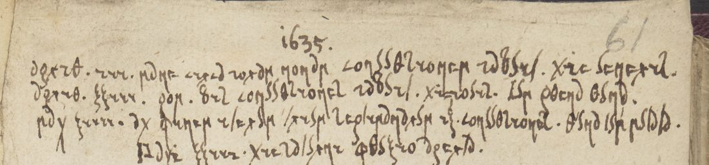

At a glanceCiphertext-only break · partial (96% of the cipher)
- The document
- Not a letter: Sir Simonds D’Ewes’s private Latin record of his infant son Clopton’s convulsion fits, one fit to a line, April 1635 to January 1636.
- Where
- British Library, Harley MS 286 (the BL catalogue files it under 289; not settled here). DECODE R7759, listed as a non-decrypted letter from an unknown sender.
- The cipher
- A simple substitution alphabet D’Ewes invented at school. No key to it is printed.
- How it was read
- The key was recovered from the slip alone by placing probable words (convulsio, plena luna, difficilis) against recurring cipher words, then checked against the calendar and D’Ewes’s Autobiography.
- What it says
- Forty-four fits to 4 March 1636; the child died on 9 May 1636.
- Still open
- The last line (trimmed under the mount), one word at the edge of line 13 and a faint phrase in lines 24–25.
01 The slip and its writer
Sir Simonds D’Ewes (1602–1650), the parliamentary antiquary whose manuscripts make up much of the Harleian collection, wrote his private papers in an alphabet of his own. His diary of 1622–24 (Harley MS 481) is partly in it, and a 1915 University of Minnesota thesis deciphered that diary without printing the key. Folio 61 is a small slip mounted on a larger leaf, headed 1635 in ordinary figures, with the margin dates 1635/1636 in clear beside the January entry and a running count in cipher, huc usque xxxii, “thus far 32”, at the end of the August entries. A rule separates the summer entries from those of September and January. The foot of the slip runs under the mount and its last line is cut.

02 The alphabet
One symbol per letter, words divided, numerals written with the letter symbols (x, v, i as ξ, S, r). Several symbols are ordinary letters used for other values, so at first sight the text looks like garbled Latin script.
| sign | letter | sign | letter | sign | letter |
|---|---|---|---|---|---|
| ∂ | a | ω | h | 6 | q |
| 8 | b | r | i | x | r |
| < | c | ʒ | I (initial) | 2 | s |
| X | d | θ | l | / | t |
| c | e | ρ | m | S | u, v |
| φ | f | η | n | ξ | x |
| 9 | p and g | o | o | y | ii (in Maii) |
No symbol for k, y or z occurs. The letters p and g are written with the same symbol, or with two forms too close to separate here.
03 The decipherment
Dates are Julian (Old Style), as D’Ewes wrote them; the year then began on 25 March. [?] marks a doubtful word, {?} one not deciphered.

| Latin | English |
|---|---|
| Aprilis iii. mane circa horam nonam convulsionem habuit. die Veneris. | 3 April [1635]: in the morning about nine o’clock he had a convulsion. Friday. |
| Aprilis xxiii. pom. bis convulsiones habuit. die Iovis. cum plena luna. | 23 April, afternoon: he had convulsions twice. Thursday. At the full moon. |
| Maii xiiii. ad finem iterum trium septimanarum ix[?]. convulsiones. luna tum[?] mutata. | 14 May: at the end of three weeks again, convulsions. The moon then changed. |
| Maii xxiii. die Saturni fluxio aperta. | 23 May, Saturday: a flux broke out. |
| Maii xxv. inter horas xii et i convulsionem habuit. cum eo die plena luna. | 25 May: between twelve and one he had a convulsion, the moon being full that day. |
| Iunii xii. decrescente luna s[?]. primam convulsionem sensit. | 12 June, the moon waning: he felt the first convulsion. |
| Iunii xiii. successit alia mitis[?] convulsio. et Iun. xiiii. alia | 13 June: another, mild convulsion followed; and 14 June another. |
| Iul. xvii. ante lunae plenilunium quae in diem xix. sequentem incidit duae convulsiones mites. | 17 July, before the full moon, which fell on the 19th following: two mild convulsions. |
| Iul. xxiii. alia convulsio difficilis. | 23 July: another convulsion, a hard one. |
| Augusti ii. luna tum[?] nova difficilis [struck word] convulsio. | 2 August, the moon then new: a hard convulsion. |
| Augusti iii. mitis convulsio mane circa horam primam; cum inter meos fuit amplexus alia terribilis convulsio, quam a prandio non leve magno tremore vexit[?]. pomeridiano iterum {?} alia difficilis convulsio. | 3 August: a mild convulsion in the morning about one o’clock; when he was in my arms, another terrible convulsion, which after dinner shook him with a great trembling, not a light one. In the afternoon again {?} another hard convulsion. |
| Aug. xxiiii. mane alia difficilis convulsio. | 24 August, morning: another hard convulsion. |
| Aug. xx. parum post lunae plenilunium (quae in diem xviii. istius mensis incidebat) tres difficillimas convulsiones, in quorum tertia os ipsius pene ad aurem dextram convulsum, quod ante numquam observavi. eadem nocte ante horam i. duae aliae convulsiones sed mitiores. | 20 August, a little after the full moon (which fell on the 18th of this month): three very hard convulsions, in the third of which his mouth was drawn almost to his right ear, which I had never seen before. The same night before one o’clock two more convulsions, but milder. |
| Aug. xxi. post horam secundam mane et ante quintam duae aliae mites convulsiones. ante duodecimam horam alia difficilis. [margin:] huc usque xxxii. | 21 August, after two in the morning and before five: two more mild convulsions. Before twelve another hard one. [margin:] Thus far 32. |
| Aug. xxxi. absolutus[?] | 31 August: free[?] (lighter ink, above the rule) |
| Sept. xxi. die et ante horam primam noctis septima[?] agonia sed an {?} vel[?] alia praecedentia pede[?] convulsionem sed etiam epilepsia nativo[?]. | 21 September, by day and before one at night, a seventh[?] fit of agony; but whether {?} or other preceding … a convulsion, but also epilepsy … (partly unread) |
| Sept. xxvii. post horam secundam mane et ante vii. tres aliae agoniae. | 27 September, after two in the morning and before seven: three more fits of agony. |
| [margin 1635/1636] Ian. xxiiii. post xvii. septimanas liberationem nocte inter horam [nonam struck] viii et ix. convulsio difficilis. sperabam tamen quod evenerat ex coena nimia quam post convulsionem evomuit. | 24 January [1636], after seventeen weeks’ freedom, at night between eight and nine: a hard convulsion. I hoped, though, that it came from too large a supper, which he vomited up after the convulsion. |
| {?} … [hor]am nonam | (last line, trimmed under the mount) |
The Autobiography gives the end: the fits came more thickly in the spring of 1636, twelve in one night on 8–9 May, and the child died about two in the afternoon of Monday 9 May 1636, a year and nine months old. D’Ewes blamed “a proud, fretting, ill-conditioned woman for a nurse”, an issue opened in the child’s neck and the violent remedies of Dr Despotine of Bury, and the rickets that followed.
04 Method
- The images of R7759 were fetched from DECODE; the second image is only the verso showing through. A search of the BL catalogue named D’Ewes.
- No key to D’Ewes’s alphabet was found in print: the Minnesota thesis on his diary and Notestein’s 1923 edition of his parliamentary journal mention the cipher but give no table.
- Probable words: a long word recurring on almost every line, <oηSSθ2ro, fits convulsio; a two-word phrase 9θcηd θSηd fits plena luna; Xrφφr<rθr2 fits difficilis. The month names and numerals at the start of each line supplied the rest.
- Checks against the calendar: 3 April 1635 was a Friday (die Veneris), 23 April a Thursday (die Iovis), 23 May a Saturday (die Saturni). The moon was full on 23 April, 19 July and 18 August and new on 2 August, as the slip says. On 25 May (“plena luna”) and 12 June (“decrescente”) it was not; the numerals are unambiguous at high magnification, so these are D’Ewes’s own slips or loose wording.
- The Autobiography (Halliwell’s edition, 1845) confirmed the start on 3 April 1635 and the count of forty-four fits.
- Two full transcription passes over line crops: 92.7% of words deciphered after the first, 96.5% after re-cropping the doubtful words at three times the size. Measured on the words of the running Latin reading (October 2026), 89.4% read as sense, under the 95% bar.
05 What remains uncertain
- Line 30, the last line (about six words): trimmed under the mount; only “…am nonam” shows. Needs the leaf lifted.
- Line 13, last word 9oθS∂- (p/g, o, l, u, a): cramped at the edge, not deciphered.
- Lines 24–25, sed an 2∂c<- / Scθ: faint and cramped; septima, pede and nativo in the same lines are doubtful (grade M).
- Doubtful words elsewhere (grade C): ix and tum (line 3), the suspension after luna (line 6), mitis (line 7), tum (line 11), vexit (line 14), absolutus (line 24).
- The shelfmark: DECODE says Harley MS 286, the BL catalogue Harley MS 289. Not resolved.
Full texts
The transcription and the decryption of every document on this page, so that the reading can be used and checked. Short files are shown here; all are in the repository.
Harley MS 286 f. 61, D'Ewes's log of his son's fits, 1635-36 read in part
Not a letter but a private record: Sir Simonds D'Ewes, in the private alphabet he invented at school, notes in Latin each convulsion fit of his infant son Clopton D'Ewes (b. July 1634, d. 9 May 1636), from 3 Apr 1635 to Jan 1636, with day, hour, moon phase and severity. His Autobiography counts 'forty and four convulsion fits' from 3 April 1635 to 4 March following. transcription.tsv gives the cipher and the Latin line by line.
Builds coherent sentences, but under the read bar of 95% of words read as sense (89% here); the holes are marked in the reading.
Transcription
∂9xrθ. rrr. ρdηc <rx<d ωxdρ ηoηdρ <oηSSθrroηcρ ωd8Srl. Xrc Scηcxrl. ∂9xrθ. ξξrrr. 9oρ. 8r2 <oηSSθ2roηcl ωd8Sr/. Xrηo[S]r2. <Sρ 9θcηd θSηd. ρdy ξrrrr. ∂X φrηcρ r/cxdρ /xrSρ 2c9/rρdηdxSρ rξ. <oηSS θ2roηcl. θSηd <Sρ ρS/d/d. ρdyr ξξrrr. Xrc 2d/Sxηr φθSξro d9cx/d. ρdyr ξξS. rη/cx ωoxd2 ξrr. c/ r <oηSSθ2roηcρ ωd8Sr/. <Sρ co Xrc 9θcηd θSηd. ʒSηr. ξrr. Xc<xc2<cη/c θSηd ż. 9xrρdρ <oηSSθ2roηcρ 2cη2r/. ʒSηc ξrrr. 2S<<c22r/ ∂θ[r]∂ ρr/r2 <oηSSθ2ro. c/ ʒSη. ξrrrr. ∂θr∂. ʒSθ. ξSrr. <dη/c θSηdc 9θcηrθSηrSρ 6Sdc rη Xrcρ ξrξ. 2c[β]Scη- /cρ rη<rXr/ XSdc <oηSSθ2roηc2 ρr/c2. ʒSθ. ξSrrr. ∂θr∂ <oηSSθ2ro Xrφφr<rθr2. ∂S9S2/. rr. θSηâ ISη ηoSâ Xrφφr<rθr2 [struck word] <oηSSθ2ro. ∂S9S2/. rrr. ρr/r2 <oηSSθ2ro ρdηc. <rx<d ωoxdρ 9xrρdρ <Sρ rη- /cx ρcoθ φSr/ ∂ρ9θcξS2 ∂θr∂ /cxxr8rθr2 <oηSSθ2ro 6S∂ρ ∂ 9x∂η- -Xro ηoη θcSc ρ∂9ηo /xcρoxc Sξrr. 9oρcxrX∂ηo r/cxSρ 9oθS∂- ∂θ∂ Xrφφr<rθr2 <oηSSθ2ro. ∂S9. ξξrrrr. ρ∂ηc ∂θr∂ Xrφφr<rθr2 <oηSSθ2ro. ∂S9. ξξ. 9∂xSρ 9o2/ θSηdc 9θcηrθSηrSρ (6S∂c rη Xrcρ ξSrrr. 2S- -/rS2 ρcη2r2 rη<rXc8∂/) /xc2 Xrφφr<rθθrρ∂2 <oηSSθ2roηc2. rη 6Sox Sρ /cx/r∂ o2 rρθrS2 9cηc /o X∂Srcρ Xcξ/cx∂ρ <oηSSθ- -2Sρ 6SoX ∂η/c ηSη6S∂ρ o82cxS∂Srρ. c∂Xcρ ηo</c ∂η/c ωoxdρ r. XS∂c ∂θr∂c <oηSSθ2roηc2 2cX ρr/roxc2. ∂S9. ξξr. 9o2/ ωoxdρ 2c<SηXdρ ρdηc c/ ∂η/c 6Srη/dρ XS∂c ∂θr∂c ρr/c2 <oηSSθ2roηc2. ∂η/c XSoXc<rρ∂ρ ωoxdρ ∂θr∂ Xrφφr<rθr2. [margin: rS< 2S6Sc ξξξrr.] ∂S9. ξξξr. ∂8θ2<θo/S2 [lighter ink, above rule] 2c9/. ξξr. Xrc c/ ∂η/c ωoxdρ 9xrρdρ ηo</r2 2c9/rρd ∂9oηr∂ 2cX ∂η 2dc<- -Scθ ∂θr∂ 9xd<cXcη/rd 9cXc <oηSSθ2roηcρ 2cX c/r∂ρ c9rθc92rd η∂/rSo. 2c9/. ξξSrr. 9o2/ ωoxdρ 2c<SηXdρ ρdηc c/ ∂η/c Srr. /xc2 ∂θr∂c ∂9oηr∂c. ++ [margin 1635/1636] ʒ∂η. ξξrrrr. 9o2/ ξSrr. 2c9/rρ∂η∂2 θr8cx∂/roηcρ ηo</c rη/cx ωoxdρ [ηoη∂ρ struck] Srrr c/ rξ. <oηSSθ2ro Xrφφr<rθr2. 29cx∂8∂ρ /∂ρcη 6SoX cScηcx∂/ cξ <ocη∂ ηrρr∂ 6S∂ρ 9o2/ <oηSSθ2roηcρ cSoρSr/. [bottom edge trimmed/under mount] ... ∂ρ ηoη∂ρ
Transcription
line glyphs latin unread total
00 ∂9xrθ. rrr. ρdηc <rx<d ωxdρ ηoηdρ <oηSSθrroηcρ ωd8Srl. Xrc Scηcxrl. Aprilis iii. mane circa horam nonam convulsionem habuit. die Veneris. 0 10
01 ∂9xrθ. ξξrrr. 9oρ. 8r2 <oηSSθ2roηcl ωd8Sr/. Xrηo[S]r2. <Sρ 9θcηd θSηd. Aprilis xxiii. pom. bis convulsiones habuit. di[e] Iovis. cum plena luna. 0 11
02 ρdy ξrrrr. ∂X φrηcρ r/cxdρ /xrSρ 2c9/rρdηdxSρ rξ. <oηSS θ2roηcl. θSηd <Sρ ρS/d/d. Maii xiiii. ad finem iteram[=iterum] trium septimanarum ix[?]. convulsiones. luna tum[?] mutata. 0 12
03 ρdyr ξξrrr. Xrc 2d/Sxηr φθSξro d9cx/d. Maii xxiii. die Saturni fluxio aperta. 0 6
04 ρdyr ξξS. rη/cx ωoxd2 ξrr. c/ r <oηSSθ2roηcρ ωd8Sr/. <Sρ co Xrc 9θcηd θSηd. Maii xxv. inter horas xii et i convulsionem habuit. cum eo die plena luna. 0 14
05 ʒSηr. ξrr. Xc<xc2<cη/c θSηd ż. 9xrρdρ <oηSSθ2roηcρ 2cη2r/. Iunii. xii. decrescente luna s[?]. primam convulsionem sensit. 0 9
06 ʒSηc ξrrr. 2S<<c22r/ ∂θ[r]∂ ρr/r2 <oηSSθ2ro. c/ ʒSη. ξrrrr. ∂θr∂. Iunii xiii. successit alia mitis[?] convulsio. et Iun. xiiii. alia 0 11
07 ʒSθ. ξSrr. <dη/c θSηdc 9θcηrθSηrSρ 6Sdc rη Xrcρ ξrξ. 2c[β]Scη- Iul. xvii. ante lunae plenilunium quae in diem xix. sequen- 0 10
08 /cρ rη<rXr/ XSdc <oηSSθ2roηc2 ρr/c2. -tem incidit duae convulsiones mites. 0 5
09 ʒSθ. ξSrrr. ∂θr∂ <oηSSθ2ro Xrφφr<rθr2. Iul. xxiii. alia convulsio difficilis. 0 6
10 ∂S9S2/. rr. θSηâ ISη ηoSâ Xrφφr<rθr2 [struck word] <oηSSθ2ro. Augusti. ii. luna tum[?] nova difficilis [struck] convulsio. 0 8
11 ∂S9S2/. rrr. ρr/r2 <oηSSθ2ro ρdηc. <rx<d ωoxdρ 9xrρdρ <Sρ rη- Augusti. iii. mitis convulsio mane. circa horam primam cum in- 0 10
12 /cx ρcoθ φSr/ ∂ρ9θcξS2 ∂θr∂ /cxxr8rθr2 <oηSSθ2ro 6S∂ρ ∂ 9x∂η- -ter meos fuit amplexus alia terribilis convulsio quam a pran- 0 11
13 -Xro ηoη θcSc ρ∂9ηo /xcρoxc Sξrr. 9oρcxrX∂ηo r/cxSρ 9oθS∂- -dio non leve magno tremore vexit[?]. pomeridiano iterum postea[?]- 1 10
14 ∂θ∂ Xrφφr<rθr2 <oηSSθ2ro. alia difficilis convulsio. 0 3
15 ∂S9. ξξrrrr. ρ∂ηc ∂θr∂ Xrφφr<rθr2 <oηSSθ2ro. Aug. xxiiii. mane alia difficilis convulsio. 0 6
16 ∂S9. ξξ. 9∂xSρ 9o2/ θSηdc 9θcηrθSηrSρ (6S∂c rη Xrcρ ξSrrr. 2S- Aug. xx. parum post lunae plenilunium (quae in diem xviii. is- 0 11
17 -/rS2 ρcη2r2 rη<rXc8∂/) /xc2 Xrφφr<rθθrρ∂2 <oηSSθ2roηc2. -tius mensis incidebat) tres difficillimas convulsiones. 0 6
18 rη 6Sox Sρ /cx/r∂ o2 rρθrS2 9cηc /o X∂Srcρ Xcξ/cx∂ρ <oηSSθ- in quorum tertia os ipsius pene ad aurem dextram convul- 0 12
19 -2Sρ 6SoX ∂η/c ηSη6S∂ρ o82cxS∂Srρ. c∂Xcρ ηo</c ∂η/c ωoxdρ -sum quod ante numquam observavi[m]. eadem nocte ante horam 0 10
20 r. XS∂c ∂θr∂c <oηSSθ2roηc2 2cX ρr/roxc2. i. duae aliae convulsiones sed mitiores. 0 6
21 ∂S9. ξξr. 9o2/ ωoxdρ 2c<SηXdρ ρdηc c/ ∂η/c 6Srη/dρ XS∂c ∂θr∂c Aug. xxi. post horam secundam mane et ante quintam duae aliae 0 12
22 ρr/c2 <oηSSθ2roηc2. ∂η/c XSoXc<rρ∂ρ ωoxdρ ∂θr∂ Xrφφr<rθr2. [margin: rS< 2S6Sc ξξξrr.] mites convulsiones. ante duodecimam horam alia difficilis. [margin: huc usque xxxii.] 0 11
23 ∂S9. ξξξr. ∂8θ2<θo/S2 [lighter ink, above rule] Aug. xxxi. absolutus[?] [lighter ink, above rule] 0 3
24 2c9/. ξξr. Xrc c/ ∂η/c ωoxdρ 9xrρdρ ηo</r2 2c9/rρd ∂9oηr∂ 2cX ∂η 2dc<- Sept. xxi. die et ante horam primam noctis septima[?] agonia sed an {?}- 1 14
25 -Scθ ∂θr∂ 9xd<cXcη/rd 9cXc <oηSSθ2roηcρ 2cX c/r∂ρ c9rθc92rd η∂/rSo. -vel[?] alia praecedentia pede[?] convulsionem sed etiam epilepsia nativo[?]. 2 10
26 2c9/. ξξSrr. 9o2/ ωoxdρ 2c<SηXdρ ρdηc c/ ∂η/c Srr. /xc2 ∂θr∂c ∂9oηr∂c. ++ Sept. xxvii. post horam secundam mane et ante vii. tres aliae agoniae. 0 13
27 [margin 1635/1636] ʒ∂η. ξξrrrr. 9o2/ ξSrr. 2c9/rρ∂η∂2 θr8cx∂/roηcρ ηo</c rη/cx Ian. xxiiii. post xvii. septimanas liberationem nocte inter 0 10
28 ωoxdρ [ηoη∂ρ struck] Srrr c/ rξ. <oηSSθ2ro Xrφφr<rθr2. 29cx∂8∂ρ horam [nonam struck] viii et ix. convulsio difficilis. sperabam 0 8
29 /∂ρcη 6SoX cScηcx∂/ cξ <ocη∂ ηrρr∂ 6S∂ρ 9o2/ <oηSSθ2roηcρ cSoρSr/. tamen quod evenerat ex coena nimia quam post convulsionem evomuit. 0 11
30 [bottom edge trimmed/under mount] ... ∂ρ ηoη∂ρ {?} ... [hor]am nonam 6 8Decryption
line glyphs latin unread total
00 ∂9xrθ. rrr. ρdηc <rx<d ωxdρ ηoηdρ <oηSSθrroηcρ ωd8Srl. Xrc Scηcxrl. Aprilis iii. mane circa horam nonam convulsionem habuit. die Veneris. 0 10
01 ∂9xrθ. ξξrrr. 9oρ. 8r2 <oηSSθ2roηcl ωd8Sr/. Xrηo[S]r2. <Sρ 9θcηd θSηd. Aprilis xxiii. pom. bis convulsiones habuit. di[e] Iovis. cum plena luna. 0 11
02 ρdy ξrrrr. ∂X φrηcρ r/cxdρ /xrSρ 2c9/rρdηdxSρ rξ. <oηSS θ2roηcl. θSηd <Sρ ρS/d/d. Maii xiiii. ad finem iteram[=iterum] trium septimanarum ix[?]. convulsiones. luna tum[?] mutata. 0 12
03 ρdyr ξξrrr. Xrc 2d/Sxηr φθSξro d9cx/d. Maii xxiii. die Saturni fluxio aperta. 0 6
04 ρdyr ξξS. rη/cx ωoxd2 ξrr. c/ r <oηSSθ2roηcρ ωd8Sr/. <Sρ co Xrc 9θcηd θSηd. Maii xxv. inter horas xii et i convulsionem habuit. cum eo die plena luna. 0 14
05 ʒSηr. ξrr. Xc<xc2<cη/c θSηd ż. 9xrρdρ <oηSSθ2roηcρ 2cη2r/. Iunii. xii. decrescente luna s[?]. primam convulsionem sensit. 0 9
06 ʒSηc ξrrr. 2S<<c22r/ ∂θ[r]∂ ρr/r2 <oηSSθ2ro. c/ ʒSη. ξrrrr. ∂θr∂. Iunii xiii. successit alia mitis[?] convulsio. et Iun. xiiii. alia 0 11
07 ʒSθ. ξSrr. <dη/c θSηdc 9θcηrθSηrSρ 6Sdc rη Xrcρ ξrξ. 2c[β]Scη- Iul. xvii. ante lunae plenilunium quae in diem xix. sequen- 0 10
08 /cρ rη<rXr/ XSdc <oηSSθ2roηc2 ρr/c2. -tem incidit duae convulsiones mites. 0 5
09 ʒSθ. ξSrrr. ∂θr∂ <oηSSθ2ro Xrφφr<rθr2. Iul. xxiii. alia convulsio difficilis. 0 6
10 ∂S9S2/. rr. θSηâ ISη ηoSâ Xrφφr<rθr2 [struck word] <oηSSθ2ro. Augusti. ii. luna tum[?] nova difficilis [struck] convulsio. 0 8
11 ∂S9S2/. rrr. ρr/r2 <oηSSθ2ro ρdηc. <rx<d ωoxdρ 9xrρdρ <Sρ rη- Augusti. iii. mitis convulsio mane. circa horam primam cum in- 0 10
12 /cx ρcoθ φSr/ ∂ρ9θcξS2 ∂θr∂ /cxxr8rθr2 <oηSSθ2ro 6S∂ρ ∂ 9x∂η- -ter meos fuit amplexus alia terribilis convulsio quam a pran- 0 11
13 -Xro ηoη θcSc ρ∂9ηo /xcρoxc Sξrr. 9oρcxrX∂ηo r/cxSρ 9oθS∂- -dio non leve magno tremore vexit[?]. pomeridiano iterum postea[?]- 1 10
14 ∂θ∂ Xrφφr<rθr2 <oηSSθ2ro. alia difficilis convulsio. 0 3
15 ∂S9. ξξrrrr. ρ∂ηc ∂θr∂ Xrφφr<rθr2 <oηSSθ2ro. Aug. xxiiii. mane alia difficilis convulsio. 0 6
16 ∂S9. ξξ. 9∂xSρ 9o2/ θSηdc 9θcηrθSηrSρ (6S∂c rη Xrcρ ξSrrr. 2S- Aug. xx. parum post lunae plenilunium (quae in diem xviii. is- 0 11
17 -/rS2 ρcη2r2 rη<rXc8∂/) /xc2 Xrφφr<rθθrρ∂2 <oηSSθ2roηc2. -tius mensis incidebat) tres difficillimas convulsiones. 0 6
18 rη 6Sox Sρ /cx/r∂ o2 rρθrS2 9cηc /o X∂Srcρ Xcξ/cx∂ρ <oηSSθ- in quorum tertia os ipsius pene ad aurem dextram convul- 0 12
19 -2Sρ 6SoX ∂η/c ηSη6S∂ρ o82cxS∂Srρ. c∂Xcρ ηo</c ∂η/c ωoxdρ -sum quod ante numquam observavi[m]. eadem nocte ante horam 0 10
20 r. XS∂c ∂θr∂c <oηSSθ2roηc2 2cX ρr/roxc2. i. duae aliae convulsiones sed mitiores. 0 6
21 ∂S9. ξξr. 9o2/ ωoxdρ 2c<SηXdρ ρdηc c/ ∂η/c 6Srη/dρ XS∂c ∂θr∂c Aug. xxi. post horam secundam mane et ante quintam duae aliae 0 12
22 ρr/c2 <oηSSθ2roηc2. ∂η/c XSoXc<rρ∂ρ ωoxdρ ∂θr∂ Xrφφr<rθr2. [margin: rS< 2S6Sc ξξξrr.] mites convulsiones. ante duodecimam horam alia difficilis. [margin: huc usque xxxii.] 0 11
23 ∂S9. ξξξr. ∂8θ2<θo/S2 [lighter ink, above rule] Aug. xxxi. absolutus[?] [lighter ink, above rule] 0 3
24 2c9/. ξξr. Xrc c/ ∂η/c ωoxdρ 9xrρdρ ηo</r2 2c9/rρd ∂9oηr∂ 2cX ∂η 2dc<- Sept. xxi. die et ante horam primam noctis septima[?] agonia sed an {?}- 1 14
25 -Scθ ∂θr∂ 9xd<cXcη/rd 9cXc <oηSSθ2roηcρ 2cX c/r∂ρ c9rθc92rd η∂/rSo. -vel[?] alia praecedentia pede[?] convulsionem sed etiam epilepsia nativo[?]. 2 10
26 2c9/. ξξSrr. 9o2/ ωoxdρ 2c<SηXdρ ρdηc c/ ∂η/c Srr. /xc2 ∂θr∂c ∂9oηr∂c. ++ Sept. xxvii. post horam secundam mane et ante vii. tres aliae agoniae. 0 13
27 [margin 1635/1636] ʒ∂η. ξξrrrr. 9o2/ ξSrr. 2c9/rρ∂η∂2 θr8cx∂/roηcρ ηo</c rη/cx Ian. xxiiii. post xvii. septimanas liberationem nocte inter 0 10
28 ωoxdρ [ηoη∂ρ struck] Srrr c/ rξ. <oηSSθ2ro Xrφφr<rθr2. 29cx∂8∂ρ horam [nonam struck] viii et ix. convulsio difficilis. sperabam 0 8
29 /∂ρcη 6SoX cScηcx∂/ cξ <ocη∂ ηrρr∂ 6S∂ρ 9o2/ <oηSSθ2roηcρ cSoρSr/. tamen quod evenerat ex coena nimia quam post convulsionem evomuit. 0 11
30 [bottom edge trimmed/under mount] ... ∂ρ ηoη∂ρ {?} ... [hor]am nonam 6 8Decryption
# Harley MS 286 f. 61 (DECODE R7759): working reading
Heading, clear: 1635. Private cipher alphabet of Sir Simonds D'Ewes, Latin; one line per convulsion fit of his
son Clopton D'Ewes (b. July 1634, d. 9 May 1636). The Autobiography (Halliwell 1845, ii 143-144) counts
"forty and four convulsion fits ... from the 3rd of April, in the year 1635, to the 4th of March then next ensuing".
[?] = glyph not yet certain; {..} = not yet read.
| l. | reading | checks |
|---|---|---|
| 1 | Aprilis iii. [mane] circa horam nonam convulsionem habuit. die Veneris. | 3 Apr 1635 O.S. = Friday; = Autobiography's first fit |
| 2 | Aprilis xxiii. pom. {vel} convulsionem habuit. [?]. cum plena luna. | Thursday; full moon (phase 0.55) |
| 3 | Maii xiiii. ad {..} {..} ii. convulsiones. luna {..}. | |
| 4 | Maii xxiii. die Saturni {..} | Saturday |
| 5 | Maii xxv. mane horam xii et i convulsionem habuit, cum eo die plena luna. | |
## State at end of session 1 (22 Sept 2026)
- Identified: Sir Simonds D'Ewes's private alphabet (BL catalogue: "short paper written by Sir Simonds D'Ewes,
in his cipher" - catalogued under Harley 289 f. 61r; DECODE files it as Harley 286 f. 61, check which).
- Content: log of the convulsion fits of his son Clopton, 3 Apr 1635 - 4 Mar 1636, with weekday, hour, moon
phase and severity. Weekday checks (3 Apr Fri, 23 Apr Thu, 23 May Sat) and moon checks (23 Apr full,
2 Aug new, 17 Jul before full) all pass. Autobiography (Halliwell 1845 ii 143-4, lit/auto01.txt l.6240):
44 fits, 3 Apr 1635 - 4 Mar 1636.
- Key so far: ∂/d-shape=a, ρ=p, x=r, r=i, θ=l, X=d, c=e, S=v/u, ſ=s, η=n, ω=h, φ=f, o=o, ξ=x (numeral), 9=g?
Recurring words: conssθlro/convulsio(nem), Xrφφrcrθ- difficil-, eθend θsnd plena luna, Isp cum, Xrr die.
- Line crops: L/b{line}_{quarter}.png (30 lines). p2 = verso show-through only.
- Not yet done: letter-by-letter transcription of lines 3-29 into a table; token count for the read bar.Reading
<!-- Reading of Harley MS 286 f. 61 written out 23 Oct 2026 (Claude Opus 5.5, verification 5) from the latin column of transcription.tsv (one line per manuscript line, words broken at a line end joined), so that the reading is scored alone; reading.md is the session-1 working file. Latin, D'Ewes's spelling; [?] / [word?] = glyph not certain; {..} = unread; [=..] = editorial gloss. -->
# Harley MS 286 f. 61: D'Ewes's log of his son's fits, 1635-36
Heading, clear: 1635.
## Reading
Aprilis iii. mane circa horam nonam convulsionem habuit. die Veneris.
Aprilis xxiii. pom. bis convulsiones habuit. di[e] Iovis. cum plena luna.
Maii xiiii. ad finem iteram[=iterum] trium septimanarum ix[?]. convulsiones. luna tum[?] mutata.
Maii xxiii. die Saturni fluxio aperta.
Maii xxv. inter horas xii et i convulsionem habuit. cum eo die plena luna.
Iunii. xii. decrescente luna s[?]. primam convulsionem sensit.
Iunii xiii. successit alia mitis[?] convulsio. et Iun. xiiii. alia
Iul. xvii. ante lunae plenilunium quae in diem xix. sequentem incidit duae convulsiones mites.
Iul. xxiii. alia convulsio difficilis.
Augusti. ii. luna tum[?] nova difficilis [struck] convulsio.
Augusti. iii. mitis convulsio mane. circa horam primam cum inter meos fuit amplexus alia terribilis convulsio quam a prandio non leve magno tremore vexit[?]. pomeridiano iterum postea[?]alia difficilis convulsio.
Aug. xxiiii. mane alia difficilis convulsio.
Aug. xx. parum post lunae plenilunium (quae in diem xviii. istius mensis incidebat) tres difficillimas convulsiones.
in quorum tertia os ipsius pene ad aurem dextram convulsum quod ante numquam observavi[m]. eadem nocte ante horam
i. duae aliae convulsiones sed mitiores.
Aug. xxi. post horam secundam mane et ante quintam duae aliae
mites convulsiones. ante duodecimam horam alia difficilis. [margin: huc usque xxxii.]
Aug. xxxi. absolutus[?] [lighter ink, above rule]
Sept. xxi. die et ante horam primam noctis septima[?] agonia sed an {?}vel[?] alia praecedentia pede[?] convulsionem sed etiam epilepsia nativo[?].
Sept. xxvii. post horam secundam mane et ante vii. tres aliae agoniae.
Ian. xxiiii. post xvii. septimanas liberationem nocte inter
horam [nonam struck] viii et ix. convulsio difficilis. sperabam
tamen quod evenerat ex coena nimia quam post convulsionem evomuit.
{?} ... [hor]am nonamTranslation
<!-- English translation (Claude Opus 5.5, 23 Oct 2026) of reading_latin.md, the reading of Harley MS 286 f. 61 (Sir Simonds D'Ewes's private alphabet; Latin). Same marks: [?] / [?word] = glyph not certain, {..} / {?} = unread, [=..] = editorial gloss, [struck] = struck out. One line per entry, as in the reading. -->
# Harley MS 286 f. 61: D'Ewes's log of his son's fits, 1635-36: English translation
Heading, clear: 1635.
## Translation
April 3. In the morning about the ninth hour he had a convulsion. Friday.
April 23. In the afternoon he had convulsions twice. Thursday. With the full moon.
May 14. At the end of three weeks [?nine] convulsions again. The moon [?then] changed.
May 23. Saturday, an open flux.
May 25. Between the hours of 12 and 1 he had a convulsion, the full moon being on that day.
June 12. With the moon waning [?] he felt the first convulsion.
June 13. Another mild [?] convulsion followed. And on June 14 another.
July 17. Before the full moon, which fell on the 19th following, two mild convulsions.
July 23. Another severe convulsion.
August 2. The moon [?then] new, a severe [struck] convulsion.
August 3. A mild convulsion in the morning. About the first hour, when he was in the arms of my people, another
terrible convulsion, which after dinner [?shook] him with no slight, great trembling. In the afternoon again
[?afterwards] another severe convulsion.
Aug. 24. In the morning another severe convulsion.
Aug. 20. A little after the full moon (which fell on the 18th of this month) three very severe convulsions, in the
third of which his mouth was drawn almost to the right ear, which I had never observed before. The same night before
the first hour two other convulsions, but milder.
Aug. 21. After the second hour in the morning and before the fifth, two other mild convulsions. Before the twelfth
hour another severe one. [margin: up to here 32.]
Aug. 31. [?released] [lighter ink, above rule]
Sept. 21. In the day, and before the first hour of the night, a [?seventh] agony; but whether {?} [?or] other preceding
[?at the foot] a convulsion, but also [?inborn] epilepsy.
Sept. 27. After the second hour in the morning and before 7, three other agonies.
Jan. 24. After seventeen weeks' freedom, at night between the hours [ninth struck] 8 and 9, a severe convulsion. I
hoped, however, that it had come from too large a supper, which he vomited up after the convulsion.
{?} ... the ninth [hou]rKey: key.md
06 Sources
- British Library, Harley MS 286 f. 61: DECODE R7759 (image 1). Same-volume key records R7753–R7758 (ff. 80–87) are other material.
- British Library catalogue, 040-002046117 (Harley MS 289 f. 61r).
- J. O. Halliwell (ed.), The Autobiography and Correspondence of Sir Simonds D’Ewes, London 1845, vol. ii pp. 143–144 (archive.org).
- University of Minnesota thesis (1915) on D’Ewes’s diary of 1622–24 (UMN Conservancy); E. Bourcier (ed.), The Diary of Sir Simonds D’Ewes 1622–1624, Paris 1974; W. Notestein (ed.), The Journal of Sir Simonds D’Ewes, 1923.
Transcription, key and notes: targets/harley286/ in the repository.